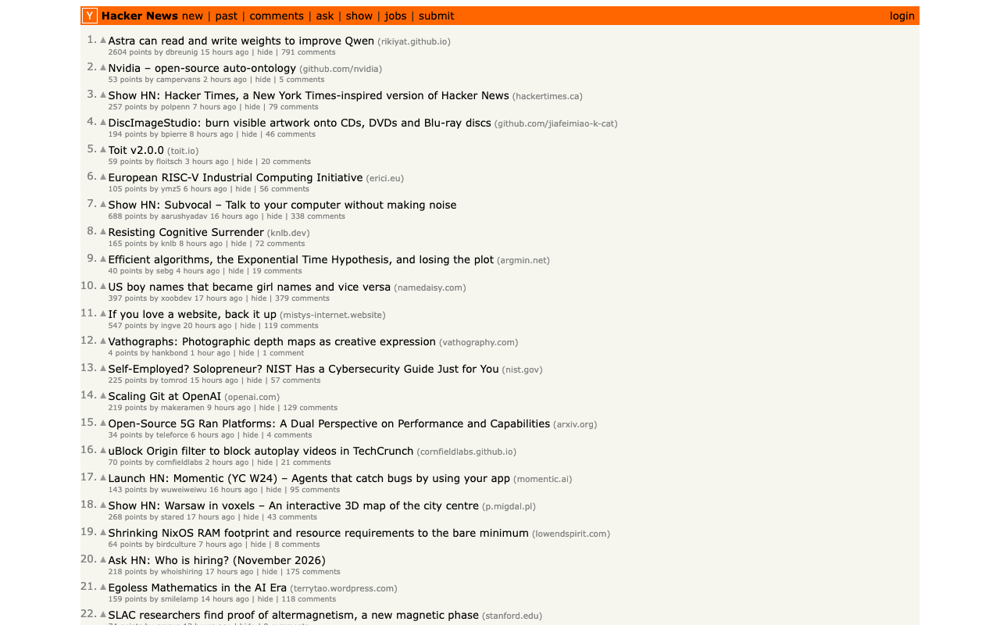
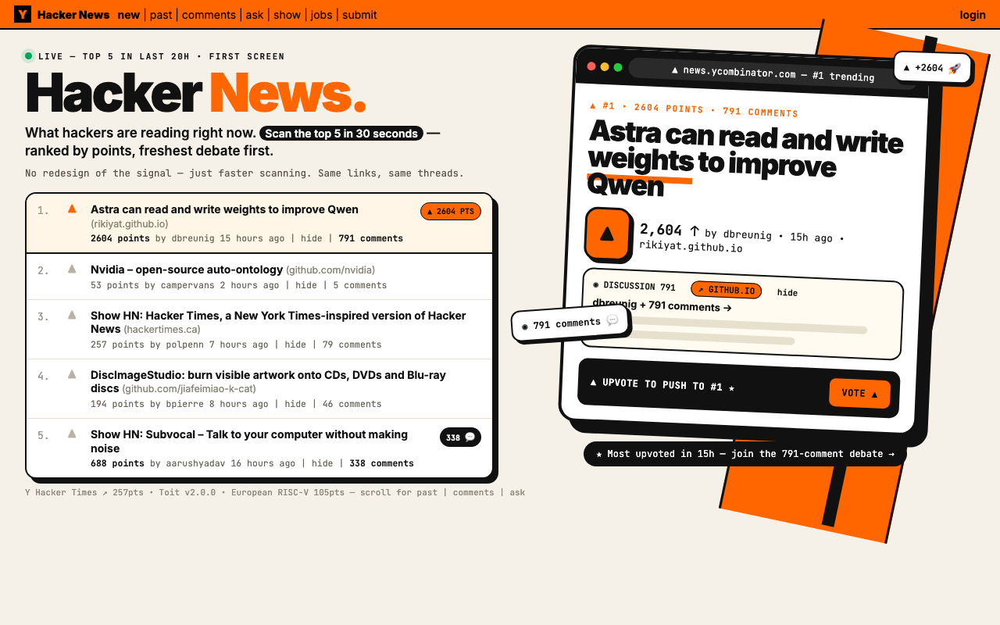

BEFORE · the live site

ui_score 0.445 · aesthetic top 16% · attention top 31% · judge 0.19
Object-shape (LO) and motion (MT) areas are low: a text-first screen with no clear object silhouette
AFTER · BrainSense loop r2

ui_score 0.584 · aesthetic top 58% · attention top 37% · judge 0.67
Object-shape (LO) and motion (MT) areas are low: a text-first screen with no clear object silhouette
Place areas (PPA/RSC) dominate: the background scene swallows the message
Reward circuit (OFC/vmPFC) is on but the appeal head is average: value is felt but what is good isn't legible